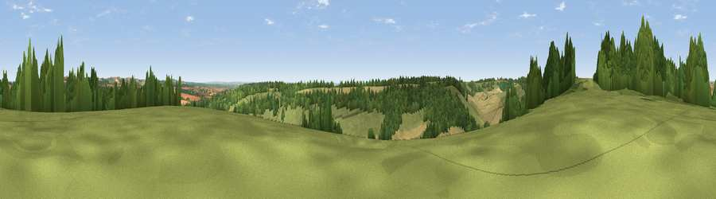

Viewpoint near Vernham Dean
#28898 in England · top 45% of its area beats it · near Vernham Dean · open accessWhere it is
The exact computed spot (SU 31925 56425). Click the marker for map links.
Public access: this spot lies on mapped open-access land (CRoW Act 2000) — you may roam here on foot. Computed from Natural England's CRoW access layer and OpenStreetMap rights of way — not the legal definitive map. Always verify locally.
The view, rendered

A 360° render of this exact spot computed from the terrain model, tree cover and land cover — summer colours, afternoon light, calibrated against photographs of famous viewpoints. Real trees, hedges and buildings will differ in detail.
The panorama
Grey silhouette: terrain skyline in each direction (720 bearings, Earth curvature and refraction included). Dashed green: skyline with trees (+15 m) and buildings (+8 m) as obstacles. Blue strip: how far the ground is visible on each bearing.
Where the view opens
Wedge length = distance to the farthest visible ground on that bearing (vegetation-aware). Rings at 10, 25 and 50 km.
What fills the view
39% grassland · 31% cropland · 30% woodland
Angular shares of the visible panorama (visual magnitude), not map area. Landscape diversity 0.48 (0–1 Shannon).
Key numbers
More beautiful places nearby
The staircase of upgrades: each row has a higher view potential than everything closer. Driving times are estimates from straight-line distance, calibrated against real road routing — check an actual route before setting out.
| Place | Direction | Drive | Score |
|---|---|---|---|
| Haydown Hill | WNW · 1 km | ~2 min | 42.2 |
| Viewpoint near Upper Chute | SW · 2 km | ~6 min | 47.4 |
| Viewpoint near Upper Chute | WSW · 4 km | ~9 min | 49.3 |
| Wexcombe Down | WNW · 4 km | ~10 min | 66.9 |
| Viewpoint near Ham | NNE · 6 km | ~13 min | 67.2 |
| Inkpen Hill | NE · 7 km | ~14 min | 69.8 |
| Gallows Down | NE · 7 km | ~15 min | 75.6 |
| Beacon Hill | E · 14 km | ~25 min | 76.7 |
51.30605, -1.54341 · source: screening · position refined by local search. Computed location — check access rights before visiting.